界面状态图册
合成图库与故障注入截图，非真实网络事故或私人照片。设计规范 · 复验记录
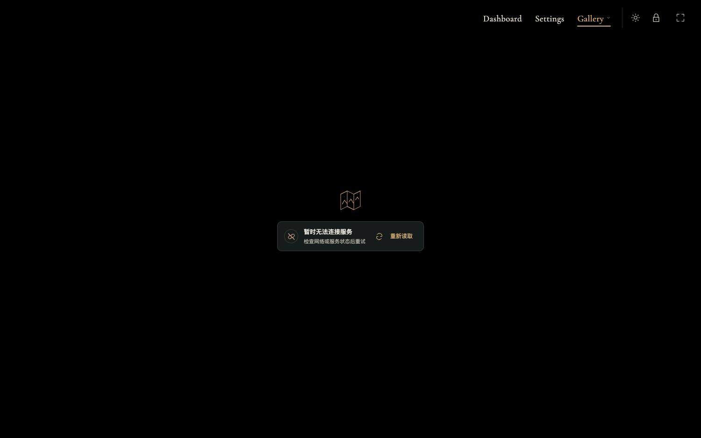
首次图库读取失败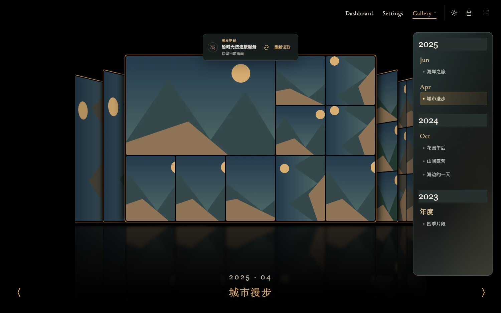
夜间 · 保留画面的后台错误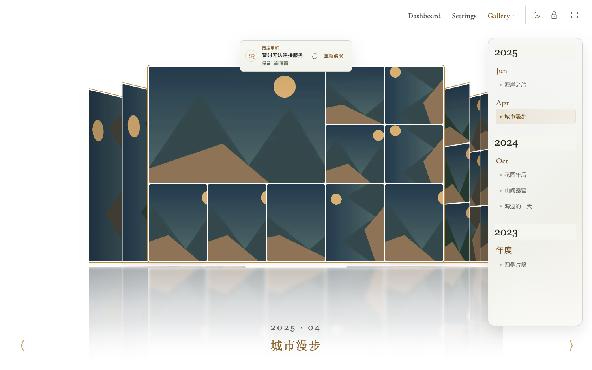
日间 · 同一状态语言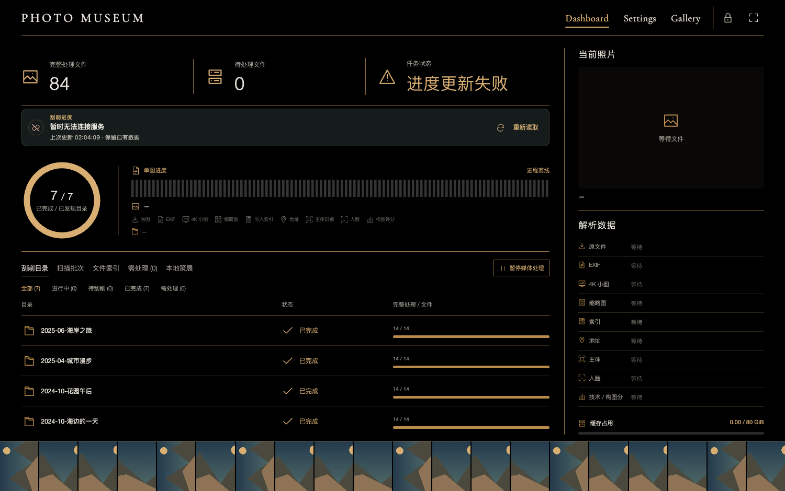
Dashboard · 真实上次更新时间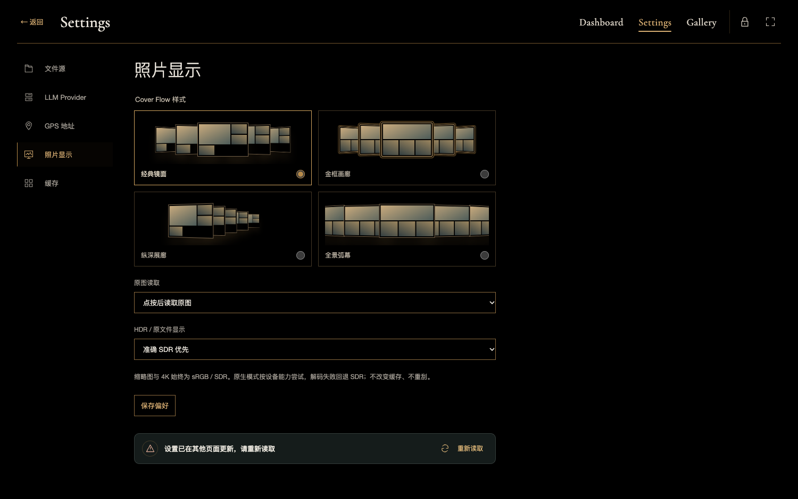
Settings · 冲突保留草稿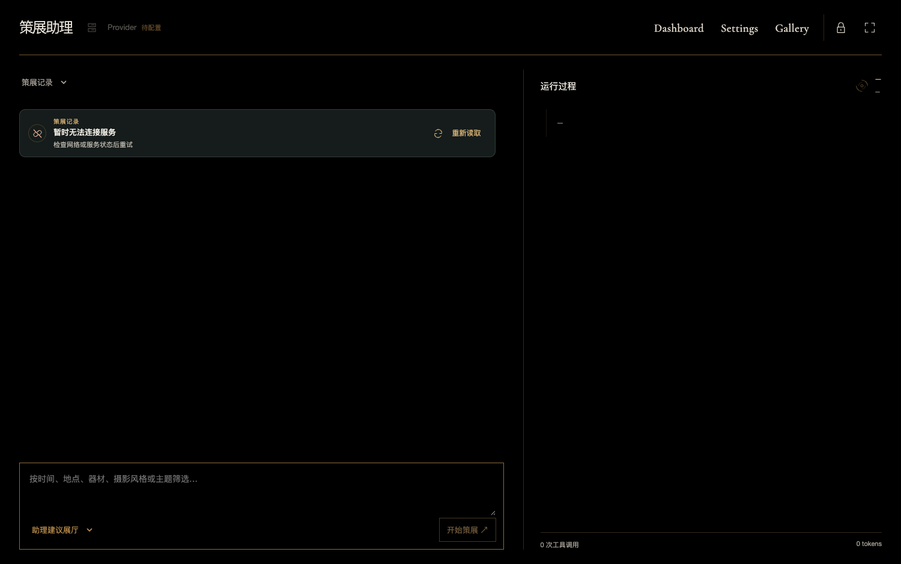
策展助理 · 记录读取失败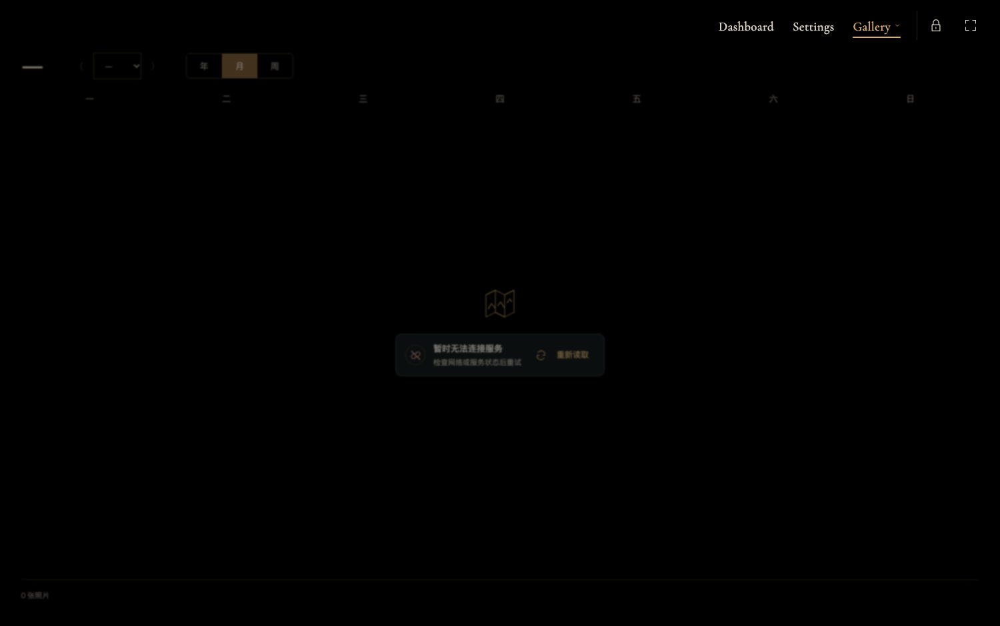
展厅 · 区域失败状态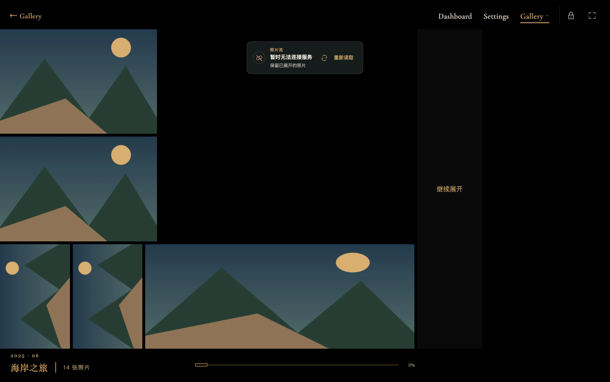
照片流 · 保留已展开照片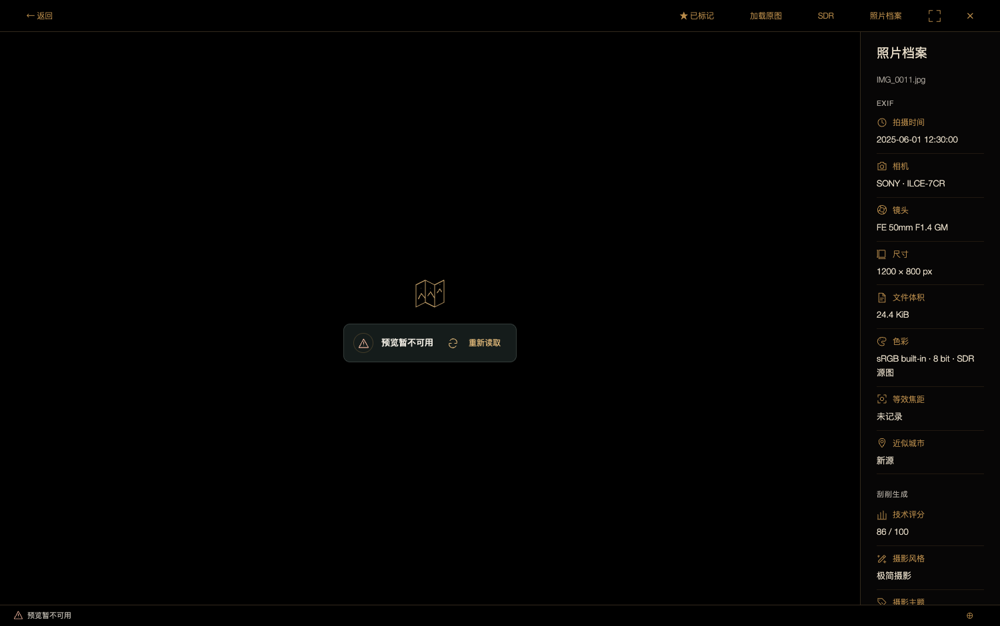
暗房 · 本地预览失败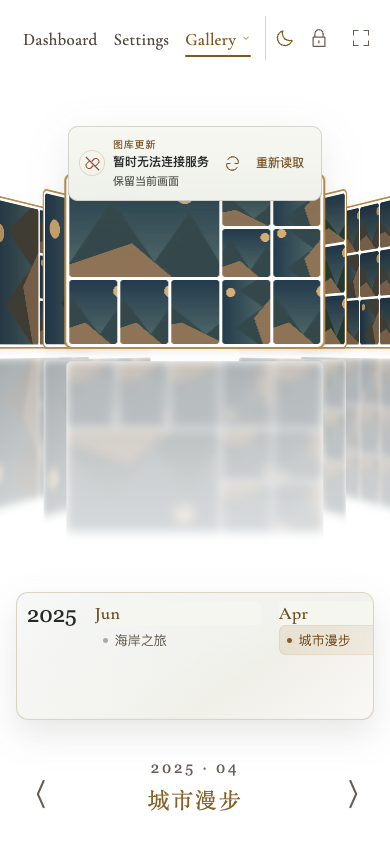
手机 · 观展错误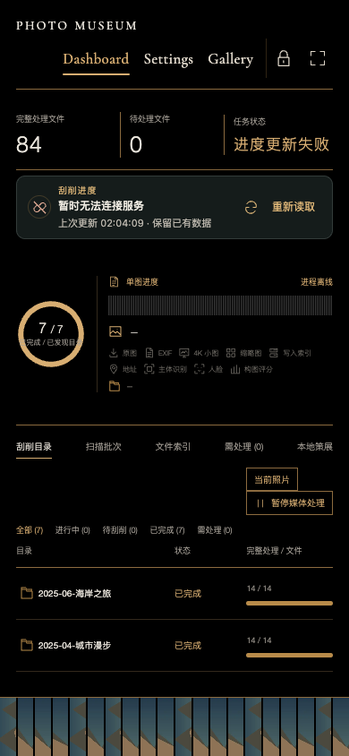
手机 · 进度错误手机 · 密码错误